What each tool is built to make
One photo per tool, so you can see the object before you start. These are studio product shots of what each maker is designed to produce - your own photo and words go into the design, and the tool renders the file on your device.
30 tools, 30 products


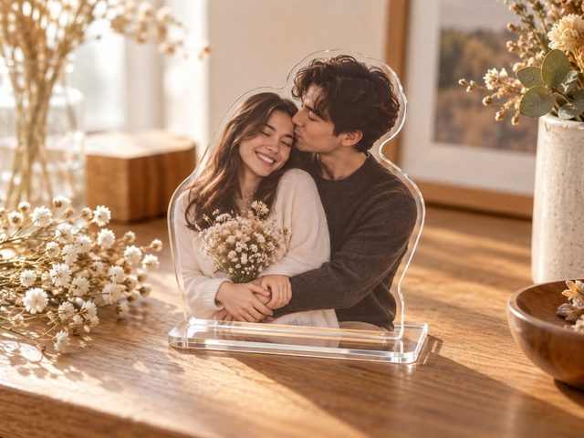


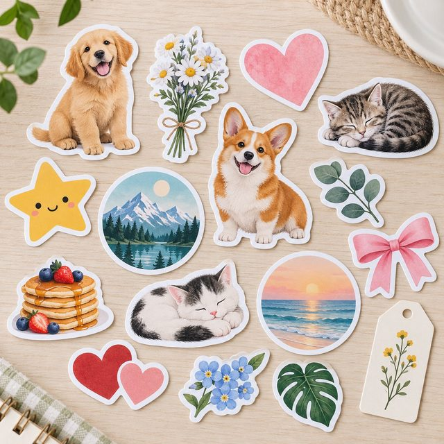
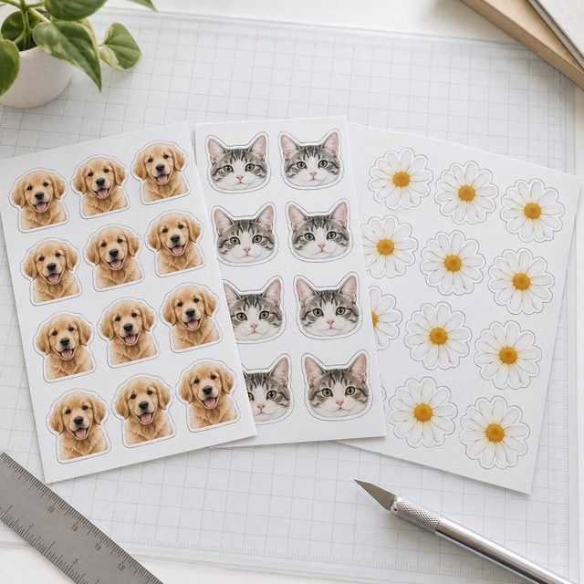
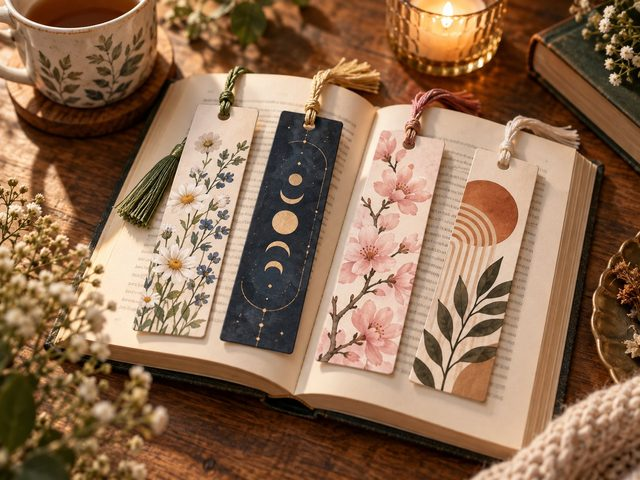
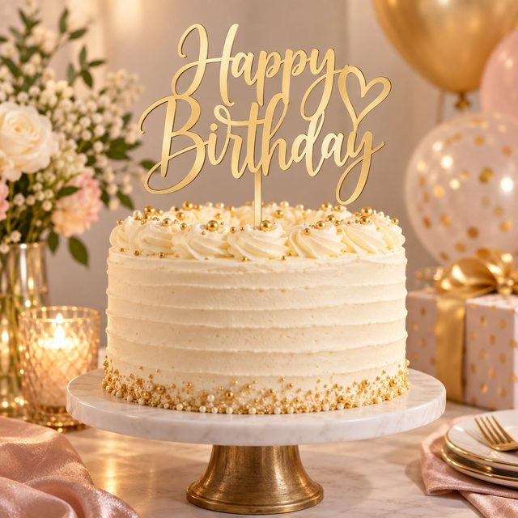
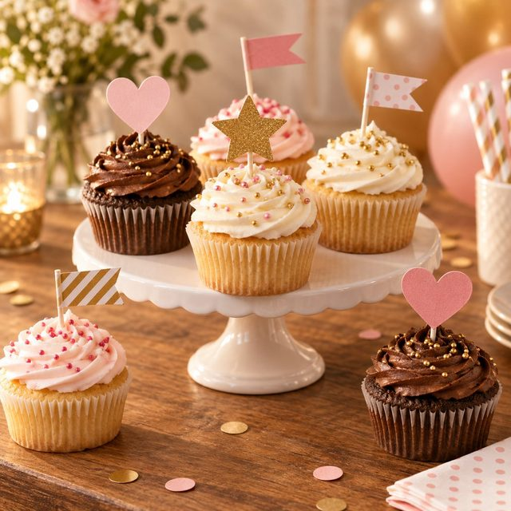
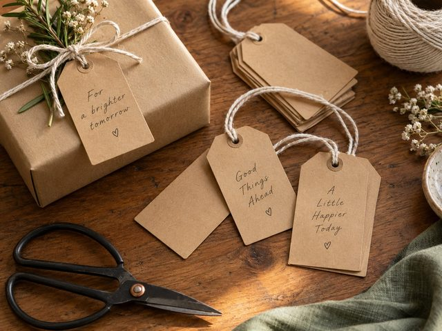
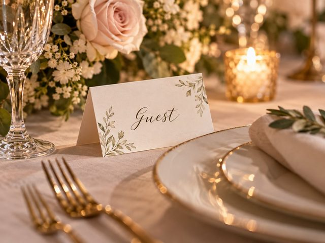
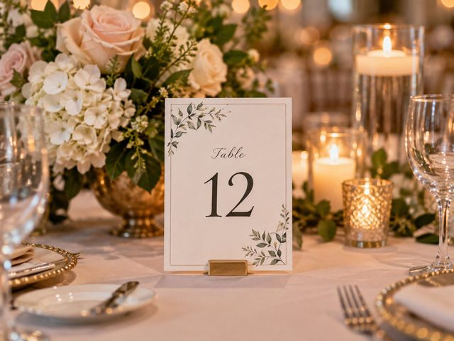
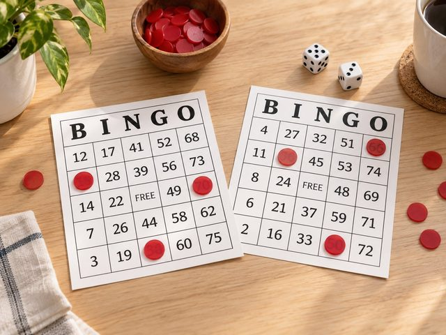
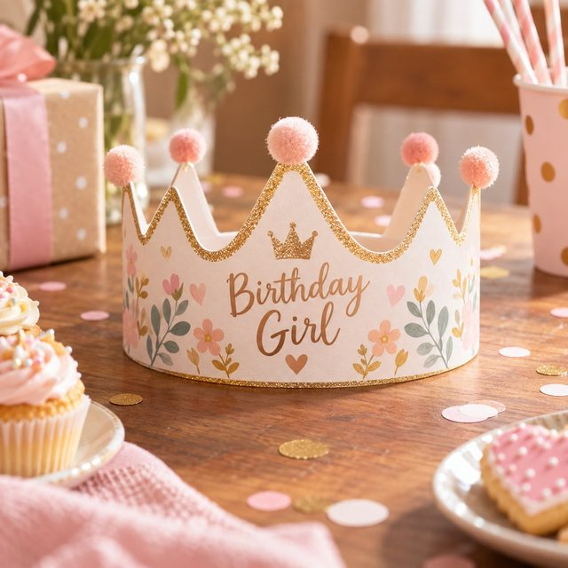
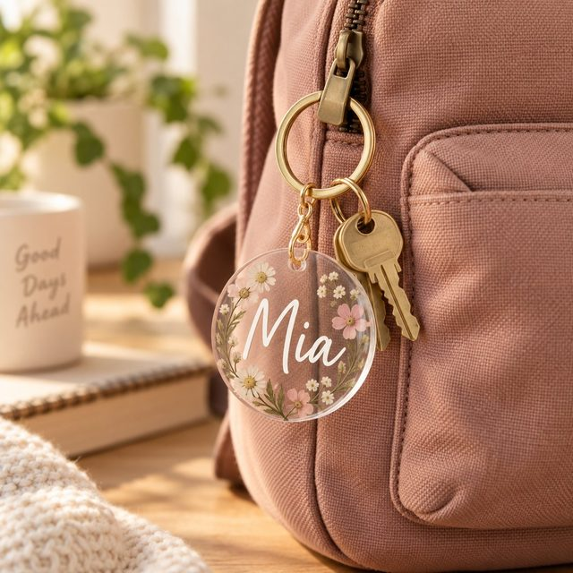
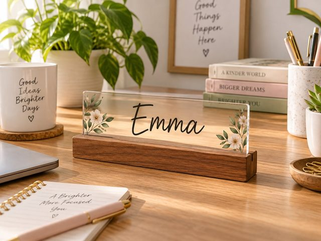
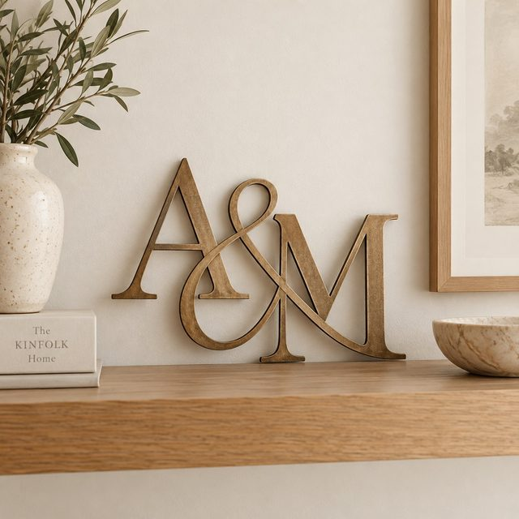
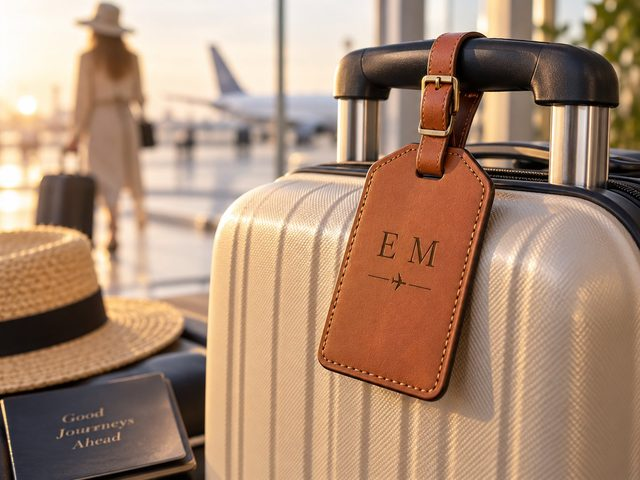
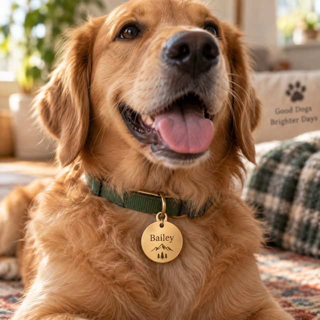


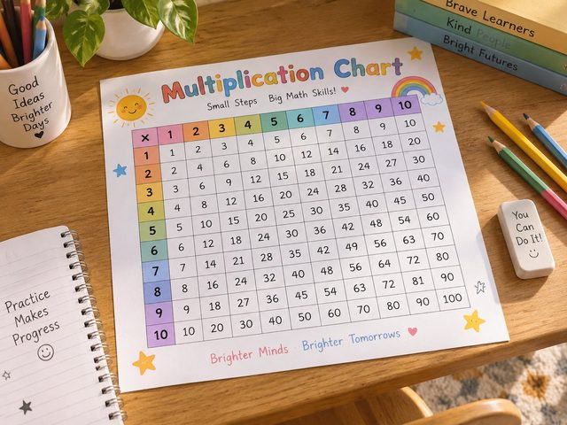

About these pictures
Each photo illustrates the product its tool produces. They are not customer submissions and no ratings, sales figures or reviews are published here. When you use a maker, the preview you see on screen is generated from your own photo.